使用纹理贴图控制基本体
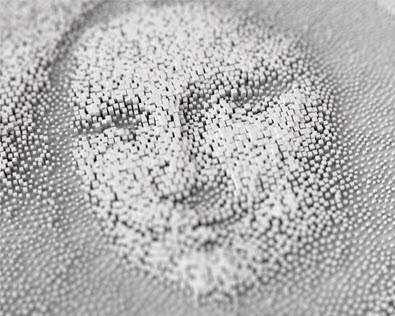
由纹理贴图驱动的 XGen“归档”立方体基本体所形成的场景
XGen 是一种功能强大的工具，提供了许多创意机会来定位任意数量的随机或均匀放置的基本体。您可以结合使用纹理文件和 XGen 描述来指定基本体生成的位置和密度，以及控制若干基本体属性。本教程将介绍如何才能非常轻松地使用纹理贴图“驱动”XGen 基本体的长度、宽度和深度。这些基本体可以是球体、样条线或如以下示例所示导出为归档的几何体。
| 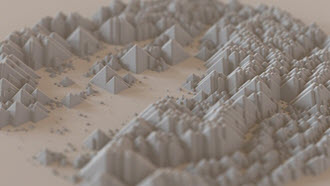 | 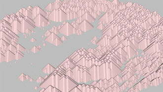 |
纹理贴图驱动的“棱锥形状”归档分布
使用此方法几乎可以实现您能够想象到的任何效果。本教程的用途包括使用贴图来驱动风景中一些树的位置，在本例中是用于创建怪异的人脸：
- 首先，创建一个多边形平面，然后将其“细分宽度”(Subdivisions Width)和“高度细分数”(Subdivisions Height)增加到 10。我们将使用此平面指定 XGen 描述。
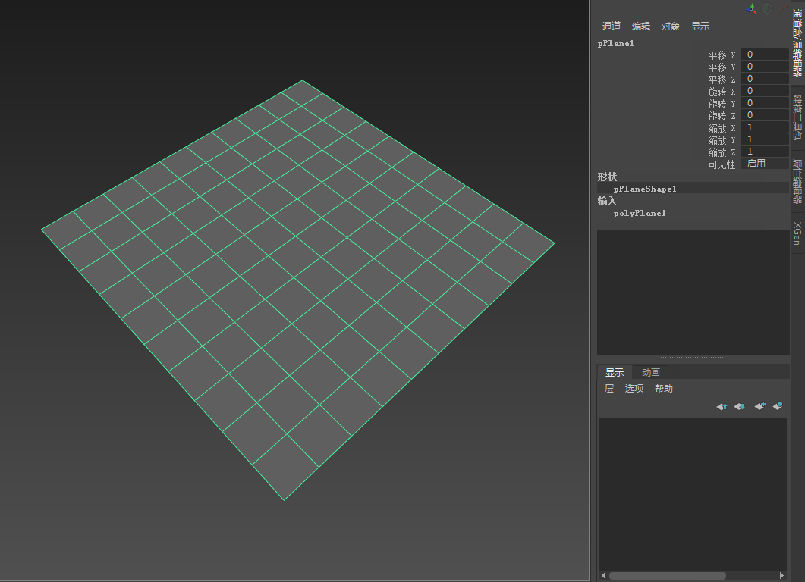
- 选择该多边形平面，然后转到“生成 > 创建描述”(Generate > Create Description)。此操作将打开下面的“创建 XGen 描述”(Create XGen Description)。
- 选择“球体”(Spheres)基本体。保留其他默认设置不变，然后选择“创建”(Create)。
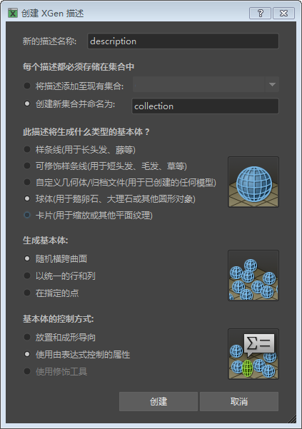
- 建议先降低“预览/输出”(Preview/Output)选项卡中的“百分比”(Percent)值，然后再继续操作。如果“百分比”(Percent)的值过高，您可能会发现计算机会因生成大量的基本体而停止运行。
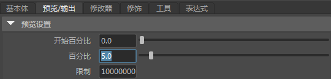
- 单击“长度”(Length)右侧的向下箭头
 。选择“创建贴图...”(Create Map...)
。选择“创建贴图...”(Create Map...)
请确保将原始 Maya 着色器指定给 XGen 描述。否则，此步骤将不起作用！创建贴图后，可以将其转化为一个不同的着色器。
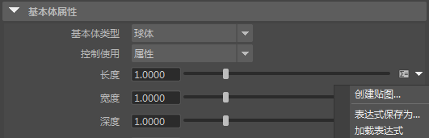
- “贴图名称”(Map Name)应为“length”。将“贴图分辨率”(Map Resolution)增加到 200 左右。这将按每个面的 Texel 数设置 PTEX 贴图的分辨率。使用高分辨率纹理时，请使用更大的“贴图分辨率”(Map Resolution)值。完成后，单击“创建”(Create)。
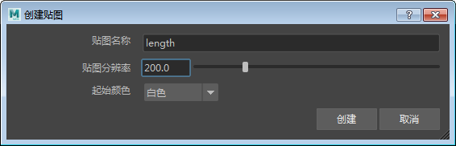
表达式
- 接下来，单击“长度”(Length)滑块控件右侧的表达式图标 。
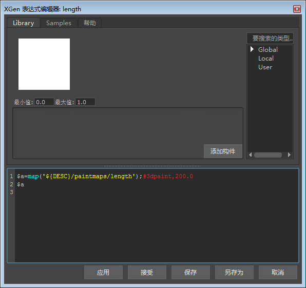
- 在“表达式编辑器”(Expression Editor)中应该可以看到以下长度表达式文本。在表达式文本字段中，您应该会看到以下文本：
$a=map('${DESC}/paintmaps/length');#3dpaint,200.0 此文本用于使用纹理贴图定义长度属性，这里的 200 是我们之前定义的“贴图分辨率”(Map Resolution)。
- 在“表达式编辑器”(Expression Editor)中添加以下行。
$a=0.3*$a+0.02; $a 其中，0.5 (0.3 + 0.2) 是球体的最大长度，0.02 是最小大小。您的长度表达式编辑器应类似下图。复制表达式文本。我们将相同的表达式用于球体基本体的“宽度”(Width)和“深度”(Depth)设置。完成后，单击“接受”(Accept)。
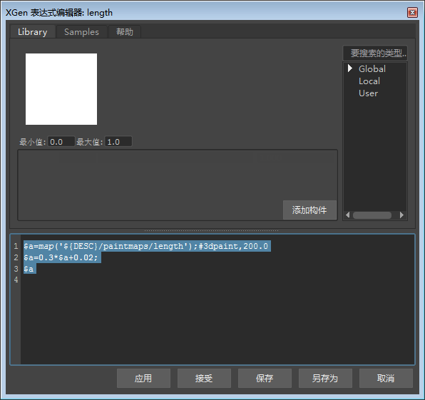
- 接下来，单击“宽度”(Width)滑块控件右侧的表达式图标 ，以便在“XGen 表达式编辑器”(XGen Expression Editor)中查看由 PTEX 贴图创建的表达式。
- 在此处粘贴用于长度的相同表达式。对“深度”(Depth)属性执行相同的操作。
创建纹理贴图
现在，我们要添加纹理贴图。单击滑块控件右侧的绘制图标 。这时应该会在“Hypershade”和“节点编辑器”(Node Editor)窗口中看到文件纹理已连接到平面。
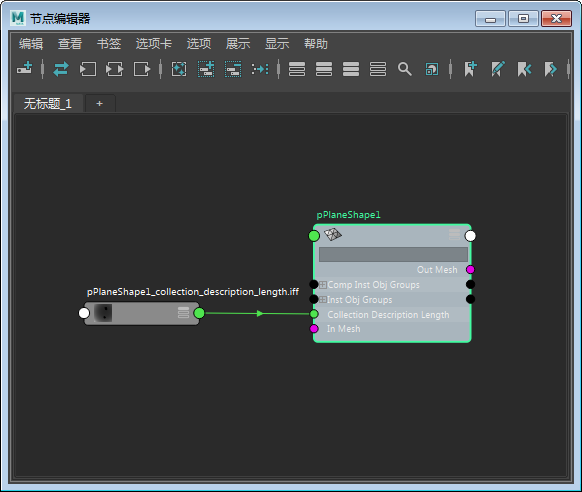
- 选择该文件纹理，然后打开要用于驱动球体基本体的比例的纹理贴图。请确保选择的纹理贴图具有较高的对比度，即使尺寸较小也可识别其特征。如果图像中包含的意外细节过多，则将不会更好地传递到球体。您可以在下面的示例中看到灰度渐变对球体基本体的长度、宽度和深度比例的影响：
 |
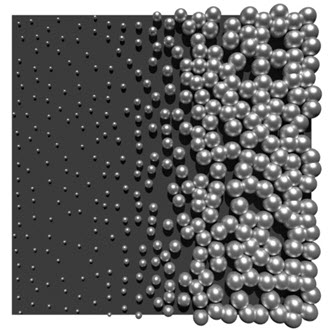 |
基于灰度渐变的球体分布
- 在渲染场景之前，我们必须先告知 XGen 更新文件纹理。为此，单击每个长度、宽度和深度属性的 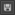 磁盘图标。创建一个灯光并渲染场景。
更新用于定义基本体属性的文件纹理后，记得选择 磁盘图标。否则，XGen 将不会更新它，渲染将不会发生变化。
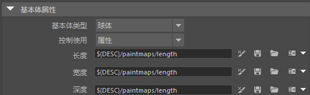
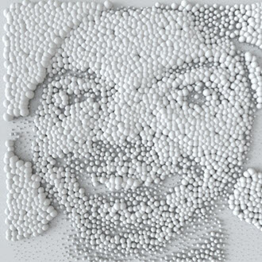
未使用纹理贴图渲染的球体基本体
纹理
下一步是添加颜色纹理文件。为 XGen 集合指定一个标准曲面着色器。为“漫反射颜色”(Diffuse Color)属性指定颜色文件纹理。确保它是一个投影文件纹理贴图，以便我们可以将其与多边形平面对齐。选择 place3dTexture 节点，然后选择“适配到组边界框”(Fit to Group BBox)。place3dTexture 应该会捕捉至多边形平面的大小。
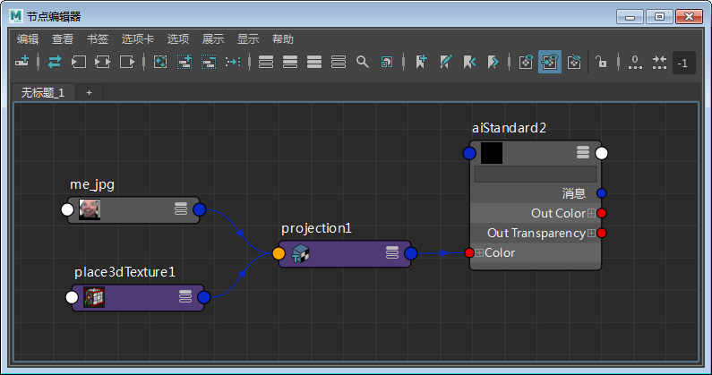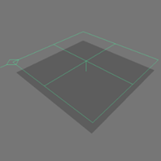
面部图像使用 3D 投影纹理贴图
密度(Density)
- 根据表达式编辑器中使用的值，您可能需要更改“密度”(Density)值。如果球体过于密集地聚在一起，您可能需要减小“密度”(Density)值。相反，如果球体之间过于松散，则可能需要增加密度或在“表达式编辑器”(Expression Editor)中增加最大长度大小。下面的图像显示了增加“密度”(Density)对 XGen 创建的基本体数量的影响。
| 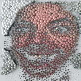 | 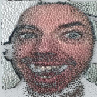 | 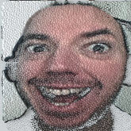 |
| 20 | 40 | 80 |
有关使用纹理贴图控制 XGen 基本体的教程到此结束。这款工具具有很多强大的功能，这只是其中一个示例。可尝试使用不同的纹理贴图和基本体类型（例如样条线和归档）。
感谢 Pedro Fernando Gómez 在 XGen 方面提供的帮助。